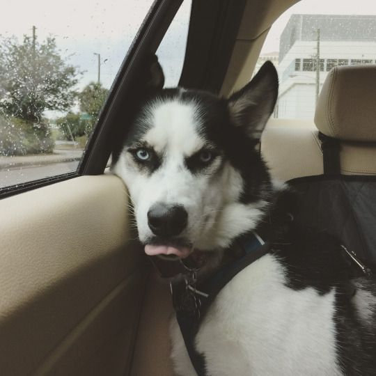

Detalles
| Caracteristicas | Detalles |
|---|---|
| Historia | El Husky Siberiano nació hace más de 2000 años en una región aislada de Siberia fruto del cruce con el lobo ártico. Allí era utilizado como perro de trabajo y acompañaba a los esquimales en sus tareas diarias. Ayudaban en la caza, protegían a su dueño de otras especies peligrosas, tiraban de trineos y transportaban todo tipo de objetos. |
| Ubicacion Geografica | Siberia, Rusia con la frontera de finlandia |
| Habitos Alimenticios | carnes, pescados, frutas y verduras. |
| Tiempo de Vida | 12-16 años |
